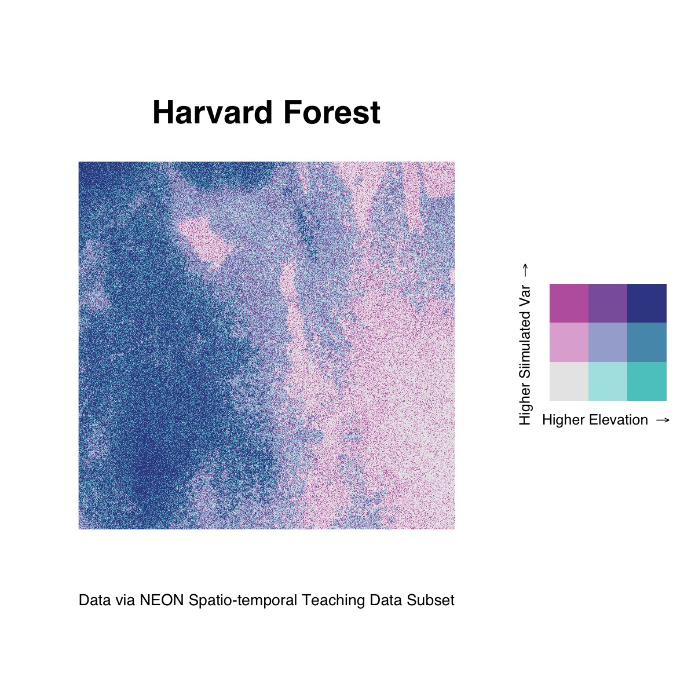

Though biscale focuses on bivariate mapping with vector data, it is possible to adapt its workflow to create bivariate maps with rasters. The following example is a reproducible example that relies on some additional data and dependencies that go beyond what comes installed with biscale itself.
To follow along with this example, you will need the raster package for working with raster data and the faux package for simulating a second variable:
install.packages(c("faux","raster"))In addition, you’ll need the cowplot package, which is a suggested dependency for biscale. You can either install it individually (faster) or install all of the suggested dependencies at once (slower, will also give you a number of other packages you may or may not want):
## install just cowplot
install.packages("cowplot")
## install all suggested dependencies
install.packages("biscale", dependencies = TRUE)Once you have the dependencies installed, load the following packages:
The data for this example are stored in biscale’s GitHub repository. They are a selection from NEON’s Spatio-temporal Teaching Data Subset, which are available on figshare. These data were created by Leah Wasser and Megan A. Jones, and are available under a CC-BY 4.0 license.
The data consist of a .tif file describing elevation in the Harvard Forest in Massachusetts. They need to be downloaded from GitHub into your R session since they do not come within the package itself due to the size of the file:
DSM_HARV <- raster("https://github.com/chris-prener/biscale/raw/main/data-raw/NEON_HARV_dsmCrop.tif")Once you have the raster data downloaded, you will need to convert them from a RasterLayer class object to a data.frame:
neon_harv <- as.data.frame(DSM_HARV, xy = TRUE)Next, we’ll create a vector correlated with the y column to simulate a bivariate relationship that we can map. To do this, we’ll use the fuax::rnorm_pre() variable to create a variable that has a moderately strong correlation with y along with a mean of 10 and a standard deviation of 2:
## create simulated data
neon_harv$sim <- rnorm_pre(neon_harv$y, mu = 10, sd = 2, r = 0.7, empirical = TRUE)
## rename NEON_HARV_dsmCrop
neon_harv$ele <- neon_harv$NEON_HARV_dsmCrop
## reorder variables
neon_harv <- subset(neon_harv, select = c(ele, sim, x, y))Finally, we’ll create our bi_class column using the same process we use with vector data. For this example, we’ll compare our simulated data with the elevation data in the raster:
neon_harv <- bi_class(neon_harv, x = ele, y = sim, style = "quantile")Mapping these raster data follows the same general workflow as our vector data examples, but requires a few minor modifications. Instead of using ggplot2::geom_sf(), we’ll use ggplot2::geom_raster(). The arguments passed to geom_raster() remain the same, however:
map <- ggplot() +
geom_raster(data = neon_harv , aes(x = x, y = y, fill = bi_class)) +
bi_scale_fill(pal = "DkBlue") +
coord_quickmap() +
labs(
title = "Harvard Forest",
x = "",
y = "",
caption = "Data via NEON Spatio-temporal Teaching Data Subset"
) +
bi_theme(base_size = 16) +
theme(legend.position="none")To project the data, we’ll use ggplot2::coord_quickmap(). To suppress the default legend, we need to use theme(legend.position="none") instead, however. Likewise, we need to explicitly hide the x and y axis labels using the labs() function.
All of the legend construction steps are the same as for vector data:
legend <- bi_legend(pal = "DkBlue",
xlab = "Higher Elevation ",
ylab = "Higher Simulated Var ",
size = 6)To combine our map with the legend, however, we need to place the legend next to the raster instead of overlaying it as we did with the other examples using the vector data. This process, using cowplot::plot_grid(), looks a bit different but achieves a great looking result:
## construct final plot
finalPlot <- plot_grid(
map, legend,
rel_widths = c(1, .4),
nrow = 1
)
## print final plot
finalPlot